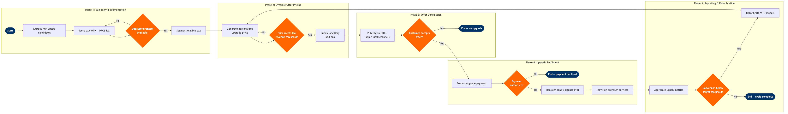

Upgrade & Upsell Revenue Optimization
Network Planning & Scheduling › Revenue Management · 17 L4 steps · 5 phases · 4 decision gates · Updated 2026-10-01 22:55
📊
Process Flow Diagram (BPMN)

📋
L4 Process Steps
| Step | Step Name | Role / Swim Lane | System | Input | Output | KPI | Dec? | Exc? |
|---|---|---|---|---|---|---|---|---|
Phase 1 1.1 |
Extract PNR data for upsell candidate pool | Revenue Management Analyst | Amadeus Altéa PSS | Confirmed bookings within 72-hour pre-departure window | Upsell candidate PNR list with cabin class, fare basis, and loyalty tier | Candidate pool coverage ≥95% of eligible bookings extracted | N | N |
| 1.2 | Score passengers using willingness-to-pay model | Revenue Optimisation Data Scientist | PROS RM | PNR list, historical upsell acceptance data, loyalty tier, booking channel | WTP score (0–100) and predicted upgrade revenue per passenger | WTP model accuracy ≥82% (lift vs. random baseline on holdout set) | N | N |
| 1.3 | Check premium cabin inventory for upgrade availability | Revenue Management Analyst | Amadeus Revenue Management (NRM / AltéaRM) | Flight departure date, cabin class inventory snapshot, current load factor by cabin | Available upgrade seats per cabin class per flight | Premium cabin upgrade seat availability query response time <2 sec | Y | N |
| 1.4 | Segment eligible passengers by WTP tier and route | Revenue Management Analyst | PROS RM | WTP scores, available upgrade inventory, route premium demand index | Prioritised upsell target list segmented into High / Medium / Low WTP tiers | High-WTP tier (score ≥70) constitutes ≥30% of total candidate pool | N | N |
Phase 2 2.1 |
Generate dynamic upgrade offer price per passenger | Revenue Optimisation Analyst | PROS RM | WTP score, fare differential (booked fare vs. premium cabin fare), route load factor | Personalised upgrade offer price in local currency | Average upgrade offer price within 15% of O&D revenue maximisation model output | N | N |
| 2.2 | Apply ATPCO fare floor and ceiling constraints | Pricing Analyst | ATPCO | Generated offer price, filed fare rules (Rule 010 / 015), minimum fare differentials | Validated upgrade offer price compliant with ATPCO fare rules | 100% of published upgrade offers compliant with ATPCO Cat 25 negotiated fare rules | Y | Y |
| 2.3 | Bundle ancillary services with upgrade offer | Ancillary Revenue Manager | NDC API Gateway | Validated upgrade price, ancillary catalogue (lounge, extra baggage, priority boarding) | Bundled upsell offer package with itemised ancillary pricing | Ancillary attach rate per upgrade offer ≥40% on applicable routes | N | Y |
Phase 3 3.1 |
Publish upgrade offers via web check-in and mobile app | Digital Channel Manager | NDC API Gateway | Bundled upgrade offer packages, passenger contact details from Altéa PSS | Live upsell offer presented in web check-in and airline mobile app | Offer display latency <3 sec for ≥98% of web check-in sessions | N | Y |
| 3.2 | Send targeted upsell email and push notifications | CRM Campaign Manager | Amadeus Altéa PSS | Segmented passenger list with personalised offer price, departure T-48h and T-24h triggers | Email and push notification delivered with personalised upgrade CTA | Email open rate ≥28%; push notification click-through rate ≥12% | N | N |
| 3.3 | Display upgrade prompts at airport check-in and kiosk | Airport Check-in Agent | SITA Airport Management System (AMS) | Passenger check-in event, remaining upgrade inventory from AltéaRM | Upgrade upsell prompt displayed to agent and self-service kiosk | Airport upgrade conversion rate ≥8% of prompted passengers | Y | N |
Phase 4 4.1 |
Process upgrade payment via preferred channel | Airport Check-in Agent / Passenger (self-service) | Amadeus Altéa PSS | Passenger acceptance of upgrade offer, payment card or loyalty points balance | Payment transaction record; EMD (Electronic Miscellaneous Document) issued | Payment processing success rate ≥98.5%; transaction time <10 sec | Y | Y |
| 4.2 | Reassign seat and update PNR cabin class | Revenue Management System (automated) | Amadeus Altéa PSS | Authorised payment confirmation, available premium cabin seat map | PNR updated with new cabin class, seat assignment, and fare basis code | PNR update latency <5 sec; zero duplicate seat assignment errors per 10,000 upgrades | N | Y |
| 4.3 | Provision premium cabin services and lounge access | Airport Operations Coordinator | SITA Airport Management System (AMS) | Updated PNR with premium cabin indicator, lounge contract entitlements | Lounge access pass issued; premium meal and amenity kit flagged for catering | Premium service provisioning lead time ≥45 min before departure for ≥95% of upgrades | N | Y |
| 4.4 | Send upgrade confirmation and boarding pass to passenger | Revenue Management System (automated) | Amadeus Altéa PSS | PNR update complete, new boarding pass data, passenger email / mobile | Updated boarding pass (mobile and printable) and upgrade confirmation email | Confirmation delivery within 60 sec of PNR update for ≥99% of upgrades | N | Y |
Phase 5 5.1 |
Aggregate upsell revenue and conversion metrics | Revenue Analytics Analyst | AWS Redshift | EMD transaction records, PNR cabin upgrade events, offer impression logs | Daily upsell revenue report: impressions, conversions, revenue per upgrade, channel mix | Upsell revenue per available seat ≥$12 on applicable routes; daily report SLA <6h after day-end | N | N |
| 5.2 | Compare actuals vs. forecast upsell revenue targets | Revenue Management Manager | Tableau | Daily upsell revenue report, budgeted upsell revenue targets by route cluster | Variance report: actual vs. forecast with root-cause flags (pricing, inventory, channel) | Upsell revenue forecast accuracy within ±10% of actuals on rolling 7-day basis | N | N |
| 5.3 | Recalibrate WTP model and pricing parameters | Revenue Optimisation Data Scientist | PROS RM | Variance report, offer acceptance/rejection data, competitor fare changes from OAG | Updated WTP model weights; revised pricing floor and ceiling parameters in PROS RM | WTP model recalibration cycle ≤7 days after conversion target miss; post-recalibration lift ≥5% | N | N |
📋